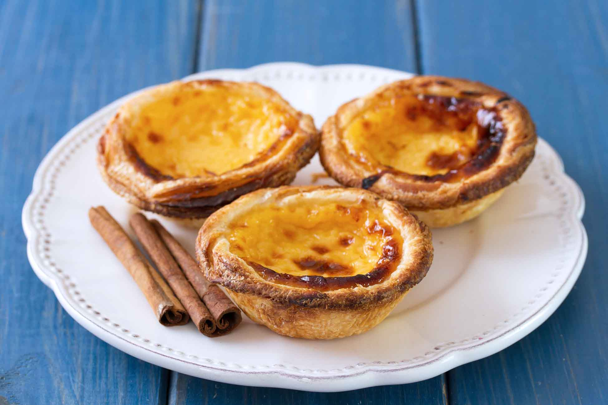
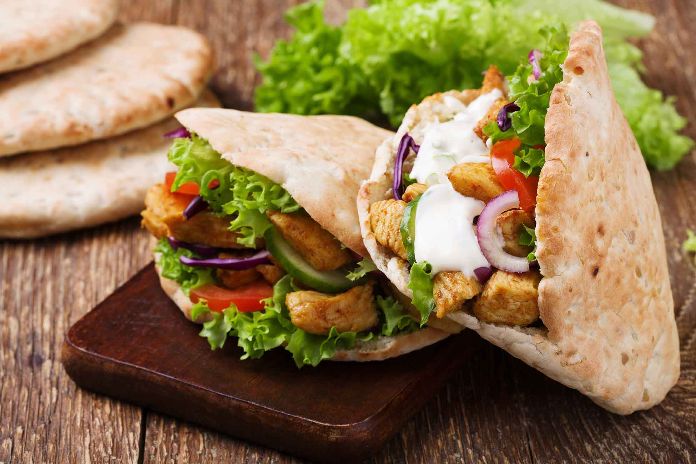
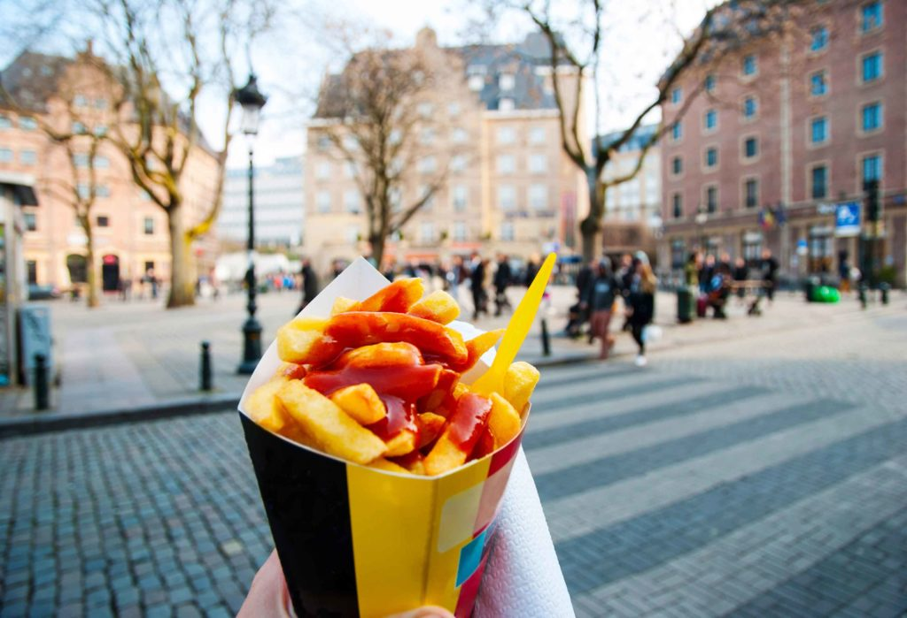
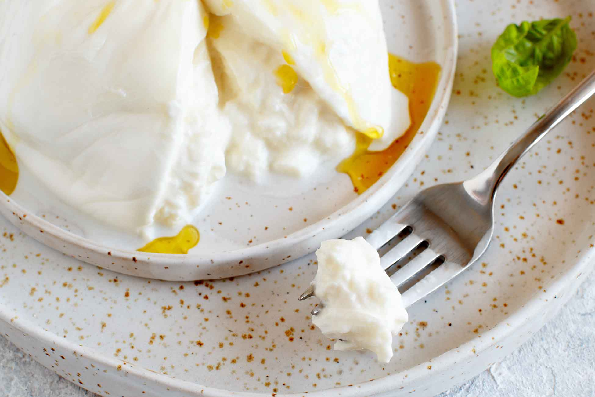
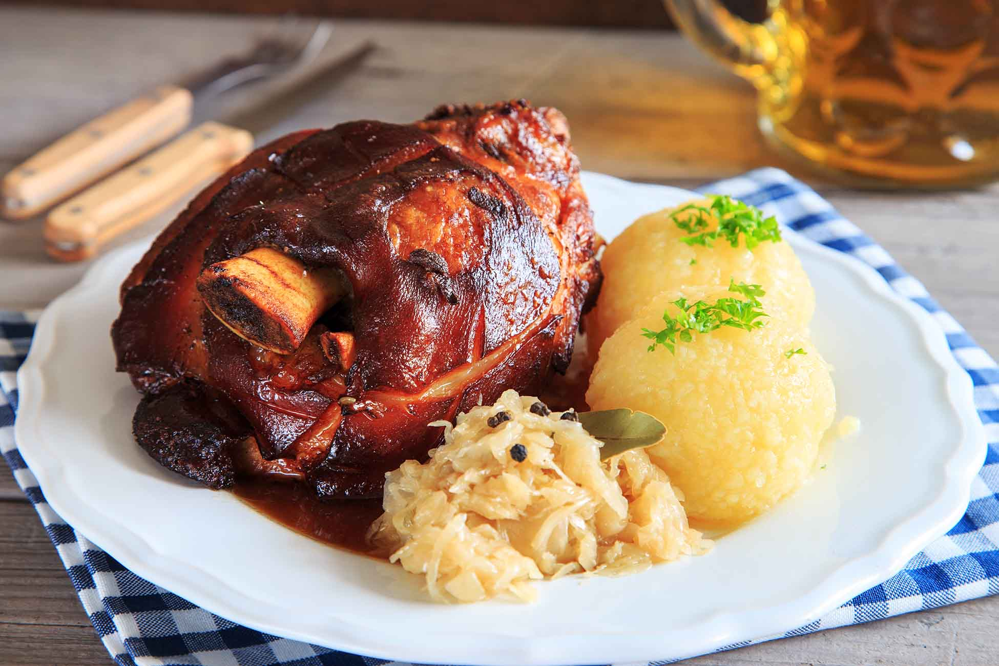

Spécialités européennes à tester au moins une fois
Les pasteis de nata (Portugal)
Je ne sais pas vous, mais j’irais bien au Portugal tous les week-ends juste pour déguster ces merveilles ! Ces sortes de petits flans nichés dans une pâte feuilletée croustillante sont fabriqués selon une recette ancestrale, bien gardée par les pâtissiers locaux. Et puis vous verrez, ils sont parfaits pour reprendre des forces après une journée passée à arpenter les ruelles de Lisbonne…
La pita grecque
Pain traditionnel grec, la pita se déguste aussi bien en sandwich qu’en dips, pour accompagner un tzatziki ou un caviar d’aubergine. Recette méditerranéenne par excellence, elle s’accommode parfaitement avec des légumes grillés, de la fêta, du poulet pané ou encore des falafels. Il ne manque plus que les maisons blanches et bleues, et ça y est, on est en Grèce !
Les frites belges
Ils en sont fiers, et on les comprend ! Pas question d’aller à Bruxelles sans s’arrêter prendre un cornet de frites en sauce dans une des nombreuses friteries de la ville. A moins que vous ne préfériez vous asseoir à table pour déguster vos frites accompagnées de moules, de poisson grillé ou encore d’un hamburger… vous nous raconterez ?
La burrata italienne
Sorte de mozzarella, ce fromage italien au coeur crémeux a tout pour séduire les palais les plus fins. Originaire de la région des Pouilles, à l’extrême sud-est de l’Italie, la burrata est traditionnellement fabriquée à base de lait de bufflone. Elle se déguste seule avec un filet d’huile d’olive, ou accompagnée d’une salade de tomates fraîches au basilic pour une entrée ou un brunch des plus gourmands. Imaginez-vous dans le Sud de l’Italie avec cette belle assiette de burrata
L’Eisbein, spécialité allemande par excellence
Un petit tour à Berlin ? C’est l’occasion rêvée de goûter l’incontournable Eisbein, vous savez, ce jarret de porc rôti accompagné de choucroute et de purée de pois. Un plat bien consistant qui vous aidera à affronter le climat si vous y allez en hiver. Et pour boire avec ? Rien de tel qu’une bonne bière locale conseillée par le restaurant !
